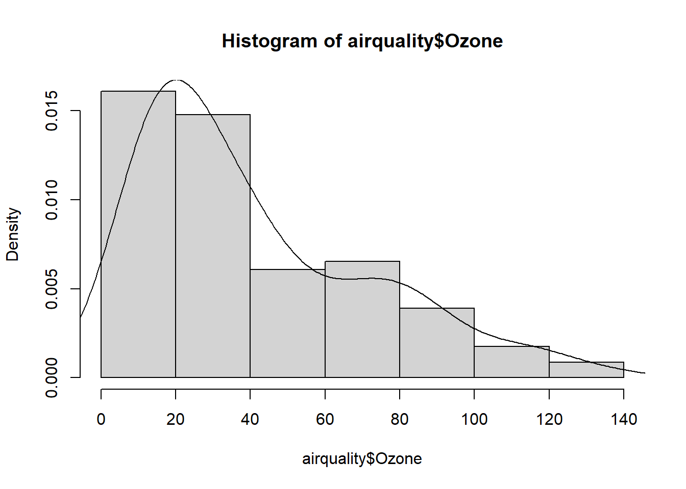
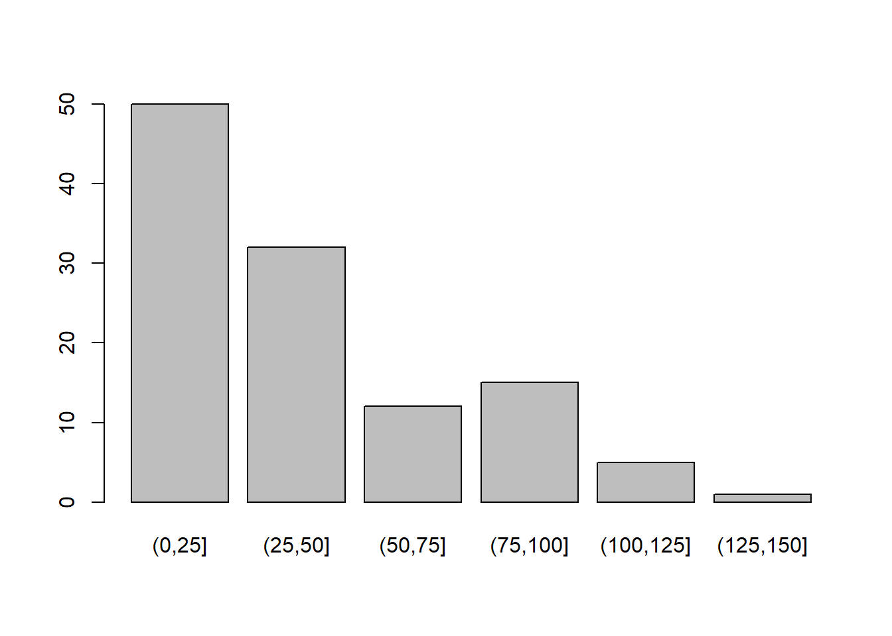

help(package = "datasets") # Datasets built-in to R
install.packages("openintro") # Installing a package- only do this once
library(openintro) # Loading library into environment- do this every session
help(package = "openintro") # Datasets in openintro library8 Exploratory Data Analysis
The Data Science Life-cycle consists of procuring the data, tidying the data to make it workable, and then repeatedly transforming, visualizing, and modeling the data until our results are finalized to how we would like them. After we are happy with the results, we then have to communicate the information to our respective audience. For this class, we will focus on transforming the data, visualizing the data, and communicating the data. Future courses will emphasize “tidying” large datasets and building models to better describe data.
- Understand the role of Exploratory Data Analysis (EDA) in the data science life cycle and identify when and why it is necessary.
- Investigate dataset documentation and structure using functions like help() and str() to determine what the data is and how it is organized.
- Detect and handle special values (e.g., NA, NaN, Inf) and assess data conditions using logical checks and summary functions.
- Prepare data by modifying variable types, filtering missing values, or creating new variables through transformation and recoding.
- Generate initial summaries using the summary() function and visualize quantitative and categorical variables to gain insight into distributions and patterns in the data.
8.1 The Basics of EDA
Whenever we start working with a new dataset for the first time, we will want to carry out Exploratory Data Analysis (EDA) to understand what we are looking at. Some questions we may ask ourselves are: What does the data represent, What does the data look like, and Are there any problems (missing or unusual) with the data values? These questions will help us complete the first goal of EDA. We should note that these goals were designed/created by Professor Portier and they will not be found online or in other literature. The first goal, which will help us understand what our data is, can be seen below:
- Goal One: Getting to know the Data
- Step One: What is the data?
- Step Two: Logical vs Physical
- Step Three: Data Conditions
- Step Four: Data Preparation
- Step Five: Initial Summary
- Step Six: Data Visualization
8.2 Step 1: What is the Data?}
We can attempt to answer Step One: What is the Data, by looking at the logical structure (metadata) of the data. Normally datasets come with documentation that tells us how the data was captured, what the attributes are that are being measured, and the data types and units present in the dataset. This will be helpful to look at as a first glance of the dataset to understand what we are working with. There are a few datasets that we will regularly use in R, one is the “datasets” library (built into R) and the other in the “openintro” library. To access a library for the first time we need to install the package using the install.packages() function. We will only need to do this once. After we have the package installed, we will need to use the library() function every time we start a new session (or RMarkdown file) to access the functions/datasets inside the package. To learn more about the packages we can use the help() function.
Try it Out
Emmit is taking an Introductory Data Science course and has learned about a package created specifically for students in his course. Help Emmit install, load, and view the documentation for the “MSMU” package.
Click to see the solution
XXXX INSERT VIDEO XXXX
8.3 Step 2: Logical vs. Physical
In Step Two: Logical vs Physical, we will want to make sure the documentation and the actual data match up. We will want to check that the number of variables and observations is the same in both places. To do this we can use the help() function to read the documentation and the str() function to look at the actual structure of the dataframe. Comparing both is an important step, especially when we start working with large “real-world” datasets. If the documentation and the data do not match up then we should be wary about working with the dataset as it might be missing vital information.
help(mtcars) # Reading the documentation
str(mtcars) # Looking at the dataset structure'data.frame': 32 obs. of 11 variables:
$ mpg : num 21 21 22.8 21.4 18.7 18.1 14.3 24.4 22.8 19.2 ...
$ cyl : num 6 6 4 6 8 6 8 4 4 6 ...
$ disp: num 160 160 108 258 360 ...
$ hp : num 110 110 93 110 175 105 245 62 95 123 ...
$ drat: num 3.9 3.9 3.85 3.08 3.15 2.76 3.21 3.69 3.92 3.92 ...
$ wt : num 2.62 2.88 2.32 3.21 3.44 ...
$ qsec: num 16.5 17 18.6 19.4 17 ...
$ vs : num 0 0 1 1 0 1 0 1 1 1 ...
$ am : num 1 1 1 0 0 0 0 0 0 0 ...
$ gear: num 4 4 4 3 3 3 3 4 4 4 ...
$ carb: num 4 4 1 1 2 1 4 2 2 4 ...
Try it Out
Help Emmit look at the documentation for the “income_data” dataset in the “MSMU” library and verify that it matches the data avaliable in the package.
Click to see the solution
XXXX INSERT VIDEO XXXX
8.4 Special Values in R}
After we have confirmed that the documentation and the data align with each other, we will want to investigate if there is anything unusual with the data. For instance, are there any missing or special values? A few special values that we might encounter are missing data (indicated as **NA), non-numeric data (indicated as NaN* which stands for Not a Number), and extreme values that are beyond the computer’s limits (indicated as \(\pm\) Inf). Below we can see a few missing values when we look at the structure of the “airquality” dataset, as well as other ways in which we might encounter special values. Notice how in R the value \(-42/0\) is \(-\infty\) but in math we would consider it Undefined.
str(airquality)'data.frame': 153 obs. of 6 variables:
$ Ozone : int 41 36 12 18 NA 28 23 19 8 NA ...
$ Solar.R: int 190 118 149 313 NA NA 299 99 19 194 ...
$ Wind : num 7.4 8 12.6 11.5 14.3 14.9 8.6 13.8 20.1 8.6 ...
$ Temp : int 67 72 74 62 56 66 65 59 61 69 ...
$ Month : int 5 5 5 5 5 5 5 5 5 5 ...
$ Day : int 1 2 3 4 5 6 7 8 9 10 ...c(2^8392, -42/0, 0/0)[1] Inf -Inf NaN8.5 Step 3: Data Conditions
For large datasets, we will not want to scan the whole dataset to see if missing values are present though. Thankfully, we can determine if a dataset or specific column has missing values present by using the is.na() function. This will return a logical vector of TRUE and FALSE depending on if the individual elements are NA. We can then sum up the logical vector to determine how many missing values are present.
sum(is.na(airquality$Ozone))[1] 37sum(is.na(airquality$Solar.R))[1] 7sum(is.na(airquality$Wind))[1] 0If we want to investigate where the missing values occur we could use the which() function to identify the elements that are missing.
head(airquality$Ozone, 10) [1] 41 36 12 18 NA 28 23 19 8 NAis.na(head(airquality$Ozone, 10)) [1] FALSE FALSE FALSE FALSE TRUE FALSE FALSE FALSE FALSE TRUEwhich(is.na(head(airquality$Ozone, 10)))[1] 5 10
Try it Out
Looking at the “income_data” dataset in the “MSMU” library, help Emmit determine if there are any missing values present and where they occur.
Click to see the solution
XXXX INSERT VIDEO XXXX
It may also be a good idea to print out the unique values to see if there are any missing or unusual values. To do this, we can use the unique() function as well as the sort() function. One other thing we might look for the an outlier value. For instance, 999 might indicate a missing value if all other values are around 20. Another thing we will note is that some functions will not work properly if missing values exist. If this is the case then we might need to specify the argument na.rm=TRUE to remove the missing values before running the function.
sort(unique(airquality$Ozone), na.last=TRUE) [1] 1 4 6 7 8 9 10 11 12 13 14 16 18 19 20 21 22 23 24
[20] 27 28 29 30 31 32 34 35 36 37 39 40 41 44 45 46 47 48 49
[39] 50 52 59 61 63 64 65 66 71 73 76 77 78 79 80 82 84 85 89
[58] 91 96 97 108 110 115 118 122 135 168 NArange(airquality$Ozone)[1] NA NArange(airquality$Ozone, na.rm=TRUE)[1] 1 168mean(airquality$Ozone)[1] NAmean(airquality$Ozone, na.rm=TRUE)[1] 42.12931We can see how many complete observations we have using the complete.cases() function. This will return TRUE if all of the observations in a row are present and FALSE if a missing value is detected. This will be beneficial so we can see if all of the missing values are in a few observations or if they are spread throughout the dataset. In addition to this, we could calculate the number of complete rows as well as how many observations have missing values by using the sum() function. If we are interested in the proportion of observations that are complete then we can use the mean() function. This will calculate the mean of the TRUEs (1) and FALSEs (0) and return the proportion of TRUEs that we have.
head(airquality) Ozone Solar.R Wind Temp Month Day
1 41 190 7.4 67 5 1
2 36 118 8.0 72 5 2
3 12 149 12.6 74 5 3
4 18 313 11.5 62 5 4
5 NA NA 14.3 56 5 5
6 28 NA 14.9 66 5 6head(complete.cases(airquality))[1] TRUE TRUE TRUE TRUE FALSE FALSEsum(complete.cases(airquality))[1] 111nrow(airquality) - sum(complete.cases(airquality))[1] 42sum(!complete.cases(airquality))[1] 42mean(complete.cases(airquality))[1] 0.7254902sum(complete.cases(airquality)) / nrow(airquality)[1] 0.7254902Finally, the last thing we may want to do in this step is to display all of the complete cases so that no missing values are present. To do this, we can pass the logical vector into our index-selection brackets. In the example below, notice how the 5th and 6th observation containing NA are no longer present:
head(airquality[complete.cases(airquality),]) Ozone Solar.R Wind Temp Month Day
1 41 190 7.4 67 5 1
2 36 118 8.0 72 5 2
3 12 149 12.6 74 5 3
4 18 313 11.5 62 5 4
7 23 299 8.6 65 5 7
8 19 99 13.8 59 5 8
Try it Out
Emmit thinks that there are might be some unusual values present in the “income_data” dataset. Help him determine which values are unusual. Also help him calculate the mean number of years until retirement.
Click to see the solution
XXXX INSERT VIDEO XXXX
8.6 Step 4: Data Preparation
In Step Four: Data Preparation, we will begin to alter the dataset to better represent certain columns. For instance, does one of our columns need to be changed from quantitative to categorical? We might also be interested in adding new columns based on the data or just generally cleaning it up to help us gain information from the dataset. One thing we might do is replace implicit missing value if, after talking to an expert they inform us the value is not correct or missing. For instance, if we talked to an expert and they said that the Ozone should not be 168 but should be a missing value instead then we can make that change.
airquality$Ozone[airquality$Ozone == 168] <- NA
sort(unique(airquality$Ozone), na.last = TRUE) [1] 1 4 6 7 8 9 10 11 12 13 14 16 18 19 20 21 22 23 24
[20] 27 28 29 30 31 32 34 35 36 37 39 40 41 44 45 46 47 48 49
[39] 50 52 59 61 63 64 65 66 71 73 76 77 78 79 80 82 84 85 89
[58] 91 96 97 108 110 115 118 122 135 NAWe will very rarely make changes to missing values in this course. Instead, we will most likely just filter them out from our calculations using the argument na.rm=TRUE. In Data 210 we will learn different options of how to replace them.
If we want to convert a variable to a different type then we can using the different data type’s function in R. Most of these will be of the form as.type() where “type” is replaced by the data type we are aiming for. So, if we want to convert a vector to numeric then we would use as.numeric(). If we wanted a character or logical vector instead we would say as.character() or as.logical(). For converting vector to a factor we could use factor().
To see an example of this we will look at the “beaver2” dataset, specifically at the “activ” variable. Looking at the documentation it seems “activ” is an indicator variable (either 0 or 1) which may be better suited to be a factor instead of an integer. So, we will go through the process of converting the vector into a factor. When we do this though, we do not want to change the column in R, rather we will create a new column to store the changed value. This way if we make a mistake the original data will still be present. So, to re-iterate… don’t overwrite your column!!! If we do happen to over-write a dataset in R then we can get the original dataset back by using the command data(“name of dataset”) and it will reload the original into your environment.
str(beaver2)'data.frame': 100 obs. of 4 variables:
$ day : num 307 307 307 307 307 307 307 307 307 307 ...
$ time : num 930 940 950 1000 1010 1020 1030 1040 1050 1100 ...
$ temp : num 36.6 36.7 36.9 37.1 37.2 ...
$ activ: num 0 0 0 0 0 0 0 0 0 0 ...unique(beaver2$activ)[1] 0 1beaver2$activ_f <- factor(beaver2$activ)
levels(beaver2$activ_f) <- c("No", "Yes")
str(beaver2)'data.frame': 100 obs. of 5 variables:
$ day : num 307 307 307 307 307 307 307 307 307 307 ...
$ time : num 930 940 950 1000 1010 1020 1030 1040 1050 1100 ...
$ temp : num 36.6 36.7 36.9 37.1 37.2 ...
$ activ : num 0 0 0 0 0 0 0 0 0 0 ...
$ activ_f: Factor w/ 2 levels "No","Yes": 1 1 1 1 1 1 1 1 1 1 ...
Try it Out
You and Emmit noticed that unusual values were present in the “Ages” and the “Salary” column. Change the unusual values to NA so that they are properly coded.
Click to see the solution
XXXX INSERT VIDEO XXXX
Sometimes it is helpful to convert a quantitative variable into a categorical variable by placing the data into different categories. To do this, we will “cut” the data into ranges and assign each value a category. An example of this can be seen below using the cut() function.
range(airquality$Ozone, na.rm=TRUE)[1] 1 135cut(airquality$Ozone, breaks=seq(0,150,by=25)) [1] (25,50] (25,50] (0,25] (0,25] <NA> (25,50] (0,25]
[8] (0,25] (0,25] <NA> (0,25] (0,25] (0,25] (0,25]
[15] (0,25] (0,25] (25,50] (0,25] (25,50] (0,25] (0,25]
[22] (0,25] (0,25] (25,50] <NA> <NA> <NA> (0,25]
[29] (25,50] (100,125] (25,50] <NA> <NA> <NA> <NA>
[36] <NA> <NA> (25,50] <NA> (50,75] (25,50] <NA>
[43] <NA> (0,25] <NA> <NA> (0,25] (25,50] (0,25]
[50] (0,25] (0,25] <NA> <NA> <NA> <NA> <NA>
[57] <NA> <NA> <NA> <NA> <NA> (125,150] (25,50]
[64] (25,50] <NA> (50,75] (25,50] (75,100] (75,100] (75,100]
[71] (75,100] <NA> (0,25] (25,50] <NA> (0,25] (25,50]
[78] (25,50] (50,75] (75,100] (50,75] (0,25] <NA> <NA>
[85] (75,100] (100,125] (0,25] (50,75] (75,100] (25,50] (50,75]
[92] (50,75] (25,50] (0,25] (0,25] (75,100] (25,50] (50,75]
[99] (100,125] (75,100] (100,125] <NA> <NA> (25,50] (25,50]
[106] (50,75] <NA> (0,25] (50,75] (0,25] (25,50] (25,50]
[113] (0,25] (0,25] <NA> (25,50] <NA> (50,75] <NA>
[120] (75,100] (100,125] (75,100] (75,100] (75,100] (75,100] (50,75]
[127] (75,100] (25,50] (25,50] (0,25] (0,25] (0,25] (0,25]
[134] (25,50] (0,25] (25,50] (0,25] (0,25] (25,50] (0,25]
[141] (0,25] (0,25] (0,25] (0,25] (0,25] (25,50] (0,25]
[148] (0,25] (25,50] <NA> (0,25] (0,25] (0,25]
Levels: (0,25] (25,50] (50,75] (75,100] (100,125] (125,150]airquality$Ozone_cat <- cut(airquality$Ozone, breaks=seq(0,150,by=25))
summary(airquality[,c(1,7)]) Ozone Ozone_cat
Min. : 1.00 (0,25] :50
1st Qu.: 18.00 (25,50] :32
Median : 31.00 (50,75] :12
Mean : 41.03 (75,100] :15
3rd Qu.: 62.00 (100,125]: 5
Max. :135.00 (125,150]: 1
NA's :38 NA's :38
Try it Out
While the “Age” variable is beneficial, Emmit thinks that having a qualitative variable might be more beneficial. Help him add a new column to the dataframe which classifies an individual as early career (< 35 years old), mid-career (35-55 years old), and late career (> 55 years old).
Click to see the solution
XXXX INSERT VIDEO XXXX
8.7 Step 5: Initial Summary
Step Five: Initial Summary is all about displaying a summary of the dataset to get some insight into how the data is spread out and where the center of each variable is. We will want to look at the results and ask ourselves what information we can gain from it. To procure a summary of a dataset, simply use the summary() function. The output will be a 5-number summary (with the mean included) along with how many missing values are in each variable.
summary(airquality) Ozone Solar.R Wind Temp
Min. : 1.00 Min. : 7.0 Min. : 1.700 Min. :56.00
1st Qu.: 18.00 1st Qu.:115.8 1st Qu.: 7.400 1st Qu.:72.00
Median : 31.00 Median :205.0 Median : 9.700 Median :79.00
Mean : 41.03 Mean :185.9 Mean : 9.958 Mean :77.88
3rd Qu.: 62.00 3rd Qu.:258.8 3rd Qu.:11.500 3rd Qu.:85.00
Max. :135.00 Max. :334.0 Max. :20.700 Max. :97.00
NA's :38 NA's :7
Month Day Ozone_cat
Min. :5.000 Min. : 1.0 (0,25] :50
1st Qu.:6.000 1st Qu.: 8.0 (25,50] :32
Median :7.000 Median :16.0 (50,75] :12
Mean :6.993 Mean :15.8 (75,100] :15
3rd Qu.:8.000 3rd Qu.:23.0 (100,125]: 5
Max. :9.000 Max. :31.0 (125,150]: 1
NA's :38 8.8 Step 6: Data Visualization
And finally, the last step we want to do is Step Six: Data Visualizations. In this step, we want to visualize the quantitative data with a histogram using the hist() function and visualize the categorical data with barplots using the barplot() function. For categorical data, we will need to use the table() function to summarize the data first. And as we move throughout the course, we will introduce different visualization techniques which will help us understand the data.
hist(airquality$Ozone, freq = FALSE)
lines(density(airquality$Ozone, na.rm=TRUE))
table(airquality$Ozone_cat)
(0,25] (25,50] (50,75] (75,100] (100,125] (125,150]
50 32 12 15 5 1 barplot(table(airquality$Ozone_cat))
Exploratory Data Analysis, and in particular these 6 steps, is something we should carry out every time we start working with new datasets. We do not want to jump into analyzing a dataset without knowing what it looks like or if changes need to be made. After a while, these steps will become second nature to us and we will be able to carry them out relatively quickly.
Try it Out
Help Emmit create a few different visualizations to understand the dataset.
Click to see the solution
XXXX INSERT VIDEO XXXX
- Carry out Exploratory Data Analysis on the “beaver2” dataset:
- Display the structure of the dataset. What are the datatypes present?
- Create a new factor variable activ_f from the activ column with levels “No” and “Yes”. Confirm the new variable is a factor.
- Why might converting activ to a factor be useful in data analysis?
- Display a summary of the beaver2 dataset including the new factor variable.
- Suppose you mistakenly overwrite the activ variable. How can you reload the original dataset to recover it?
- Carry out Exploratory Data Analysis on the “exam_data” dataset in the “MSMU” library:
- Use the help() function to explore the documentation for the built-in exam_data dataset. What does this dataset represent?
- Use str() on the exam_data dataset. How many rows and columns are there? Are there any special values or missing values mentioned?
- Identify how many missing values are in each column
- Display the unique values of the writing.score column sorted in increasing order. What does the range look like including and excluding missing values?
- Explain why it might be important to know how many complete observations exist in this dataset. Use a function to find how many complete rows there are.